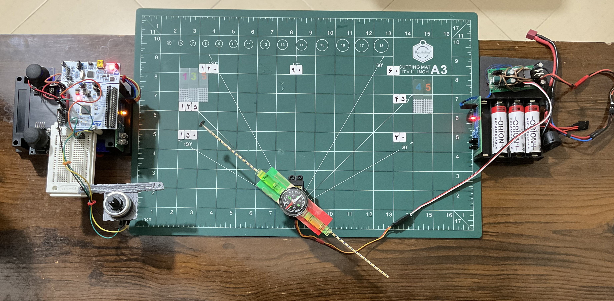
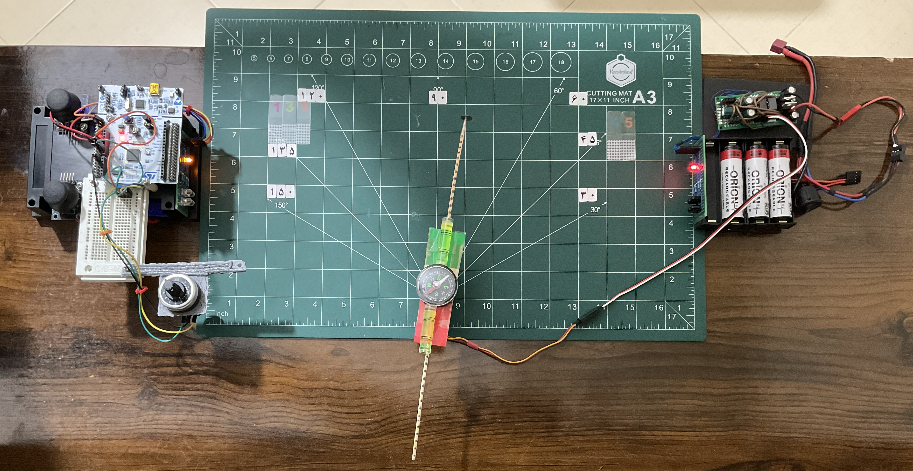
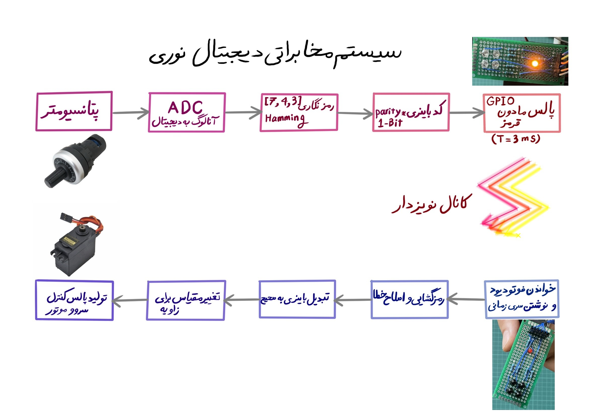
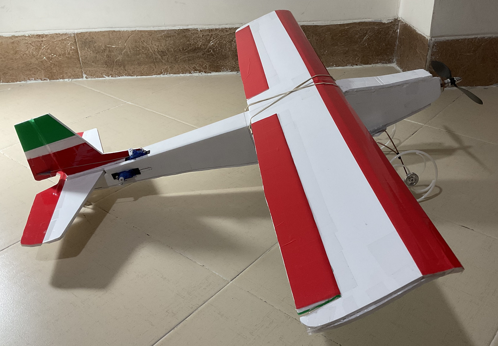
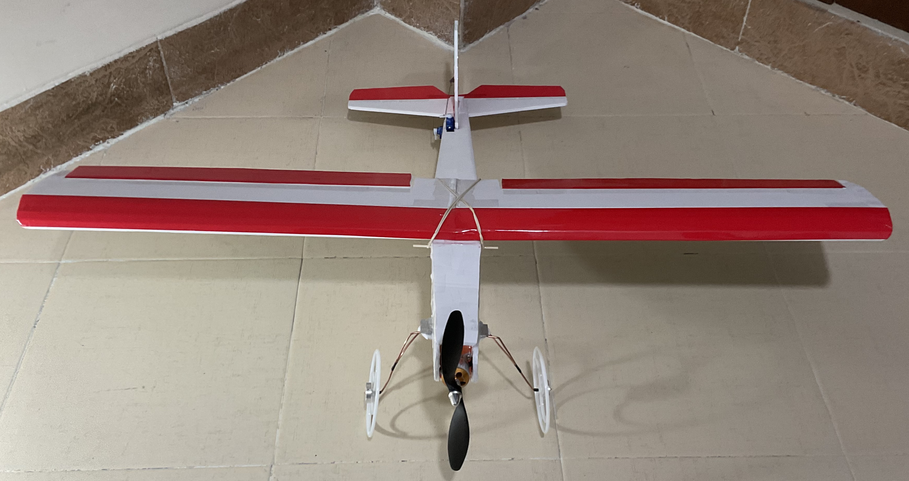
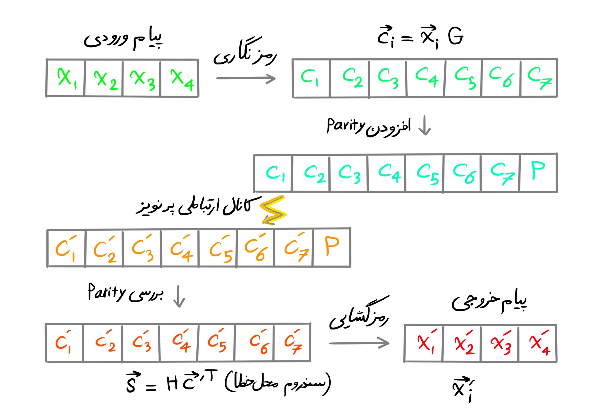

Infrared Communication
مخابره داده با استفاده از سیگنال مادون قرمز چگونه کار میکند؟
در این پروژه، فرستنده قصد دارد یک مقدار عددی آنالوگ را به گیرنده ارسال کند. گیرنده نیز به نوبت خود میخواهد از این مقدار عددی در هدایت یک سامانه مکانیکی استفاده کند. کدهای بررسی توازن اطلاعات در سناریوهایی به کار برده میشود که امکان ارسال مجدد داده وجود دارد. اگر گیرنده خطایی را در داده تشخیص دهد، میتواند از فرستنده تقاضا کند که داده را دوباره بفرستد. این نحوه کار قراردادهای ارتباطی اینترنتی مانند TCP/IP است. بازبینی پریتی با افزودن یک بیت غیر اطلاعاتی به بلوک داده ارسالی برای اطمینان از تعداد یکها، که بسته به نیازمندی از پیش تعریف شده، زوج یا فرد است. با استفاده از کدهای خطی، یک مرحله بازبینی خطای پیشرفته در طول کدهای بررسی توازن کم چگال اضافه میکنیم تا ضریب اطمینان و کارایی شبکه را بهبود دهیم.
- ورودی: مقاومت متغیر
- کانال ارتباطی: موج مادون قرمز
- خروجی: موتور الکتریکی از نوع براشلس یا سروو
- هدف: کنترل زاویه موتور از راه دور با سیگنال نوری

شیوهی ارسال دستورات آنالوگ برای کنترل یک موتور از راه دور
در اینجا یک راه حل بدون سیم و بدون موج رادیویی برای انتقال اطلاعات بین فرستنده و گیرنده ارايه میشود. علاوه بر ذخیرهسازی، انتقال و پردازش داده دیجیتال، یک راه مبتنی بر کدهای اصلاح کنندهی خطای خودکار برای افزایش قابلیت اطمینان نیز طراحی و پیاده سازی شده است. در این رویکرد، یک بار عملیات رمزنگاری داده انجام میشود و پس از عبور اطلاعات از یک کانال ارتباطی نوری، عملیات دیگری برای رمزگشایی داده انجام میشود. این کانال پر نویز میتواند بخشی از داده فرستنده را تخریب کند و داده دیگری را به جای آن به گیرنده تحویل دهد. اگر این قرارداد بین دو نقطه موفقیت آمیز باشد، علی رغم وجود نویز، پیام رمزگشایی شده با پیام مورد نظر فرستنده تطابق خواهد داشت.

$G = \begin{bmatrix} 1 & 0 & 0 & 1 & 0 & 1 & 1 \\ 0 & 1 & 0 & 1 & 0 & 1 & 0 \\ 0 & 0 & 1 & 1 & 0 & 0 & 1 \\ 0 & 0 & 0 & 0 & 1 & 1 & 1\end{bmatrix}$
$G \in \mathbb{F}_2^{k \times n}$
$c_i = x_i G$
$(0, 0, 0, 1)G = (0, 0, 0, 0, 1, 1, 1)$
$(0, 0, 1, 0)G = (0, 0, 1, 1, 0, 0, 1)$
$(0, 0, 1, 1)G = ((0, 0, 1, 0) + (0, 0, 0, 1))G = (0, 0, 1, 1, 1, 1, 0)$
$(0, 0, 1, 1, 0, 0, 1) + (0, 0, 0, 0, 1, 1, 1) = (0, 0, 1, 1, 1, 1, 0)$
شبکهی مخابرات داده دیجیتال نوری
در میانهی این خط لوله داده، یک رسانه وجود دارد که میتواند وکیوم (خلا) فضایی، آب، هوا، فیبر نوری و یا هر رسانه شفاف نوری دیگری باشد. در یک انتهای این شبکه مخابرات نوری یک پتانسیومتر صنعتی را به عنوان ورودی داریم و در انتهای دیگر یک موتور الکتریکی با قابلیت تغییر وضعیت پیوسته داریم. از میکروکنترلرهای ۳۲ بیتی ST برای خواندن حسگرها و پردازش داده استفاده شده است که در هر دو سمت فرستنده و گیرنده به طور مستقل کار میکنند. در ابتدا مقدار آنالوگ مقاومت متغیر که توسط کاربر تعیین میشود به مقدار دیجیتال تبدیل میشود. بعد، با انجام دادن یک ضرب ماتریس در بردار، مقدار دیجیتال ورودی را از ۴ بیت به یک داده ۷ بیتی تبدیل میکنیم. در این محاسبه از ماتریس G با ابعاد ۴ در ۷ استفاده میشود که از قبل فرستنده و گیرنده بر روی مقدار درایههای آن توافق دارند. سپس، تعداد بیتهای یک موجود در داده را می شماریم تا یک بیت توازن پریتی تولید کنیم. زمانی که این واژه رمز دریافت شود، هنگام رمزگشایی در سوی دیگر کانال مخابراتی، بیت توازن زوج و فرد پیش از مرحله محاسبهی بردار سندروم با استفاده از ماتریس H بازبینی میشود. در پایان وظیفههای برنامهی فرستنده، مطابق رشتهای رمزنگاری شده به نام واژهی رمز، دیودهای نورانی را با عرض پالس ۳ میلی ثانیه روشن وخاموش میکند تا پیام به سمت گیرنده ارسال شود.
- پتانسیومتر صنعتی
- مبدل آنالوگ به دیجیتال
- رمزنگاری همینگ {۷، ۴، ۳}
- کد باینری یک بیتی برای پریتی
- پالس مادون قرمز تولید شده با درگاه دیجیتال ریزکنترلگر
- کانال ارتباطی نویز دار (خارج از مرزهای تحهیزات شبکه مخابرات داده)
- خواندن فوتو دیود و نوشتن یک دنبالهی زمانی
- رمزگشایی و اصلاح خودکار خطا
- تبدیل عدد باینری به عدد صحیح
- تغییر مقیاس داده برای زاویه بین صفر تا ۱۸۰ درجه
- مدولاسیون پهنای پالس برای کنترل وضعیت سروو موتور
$H = \begin{bmatrix} 1 & 1 & 1 & 1 & 0 & 0 & 0 \\ 1 & 1 & 0 & 0 & 1 & 1 & 0 \\ 1 & 0 & 1 & 0 & 1 & 0 & 1 \end{bmatrix}$
$H \in \mathbb{F}_2^{(n - k) \times n}$
$G \perp H$
$P = G \oplus H$
$H c = 0 \longrightarrow s = H c^{\prime T} = H (c + e_i)^T = H c + H e_i = H e_i$

هنگام عبور پیام نوری از کانال ارتباطی، گیرنده مقدار فوتودیودها را در هر لحظه ثبت میکند و یک دنباله زمانی از داده تولید میکند. تشخیص لبه بالارونده و پایین رونده در این دنباله زمانی با استفاده از یک الگوریتم مشتقگیر انجام میشود. در سمت گیرنده برای اندازهگیری پهنای هر پالس از زمانسنج اختصاصی درون میکروکنترلر استفاده شده است. اولین کار بازبینی بیت پریتی است و در صورت درست بودن آن، عملیات تولید سندروم خطا شروع میشود. در فضای برداری انتزاعی پیام، زیرفضای کد و زیرفضای بازبینی خطا نسبت به یکدیگر متعامد هستند. فضای کد با ضرب داخلی ویژه، دارای یک اتصال هندسی ارسمان برای اندازه گیری طول و زاویه است. از ماتریس G برای رمزنگاری بردار داده استفاده میشود، در حالی که از ماتریس H برای بررسی این حقیقت استفاده میشود که آیا بردار داده در زیرفضای برداری عمودی دارای مولفهای افقی غیر صفر است یا نه. در صورتی که داده به زیرفضای بازبینی خطا وارد نشده باشد، حاصلضرب ماتریس بازبینی در بردار داده صفر خواهد بود. در غیر این صورت، حاصلضرب مکان بیت خطا را تولید میکند. در صورت بروز خطا، نقیض بیت خطادار استفاده میشود و به این ترتیب خطا به طور خودکار اصلاح میشود. در تعریف خاصی که از ماتریس رمزنگاری در اینجا به کار بردهایم، حداکثر یک بیت دارای خطا اصلاح میشود. یعنی اگر سی و سی پرایم به عنوان دو رشتهی بیتی فقط در یکی از بیت ها تفاوت داشته باشند، آنگاه خطا توسط ماتریس H به طور خودکار تشخیص داده شده و برطرف خواهد شد. و بعد پیام رمزگشایی میشود تا به یک عدد صحیح برسیم. مقیاس اندازهی این عدد تغییر داده میشود تا به یک زاویه بین صفر تا ۱۸۰ درجه تبدیل شود که برای فرمان دادن به سروو موتور یا مدار کنترل کننده سرعت موتور مناسب است. میکروکنترلر گیرنده فرمانهای مخصوص موتور را با دشتن این زاویه تولید میکند و پالس کنترلی را به درایور موتور اعمال میکند. در این مرحله کار دریافت پیام تمام میشود.
$s = H c^{\prime T} = \begin{bmatrix} 1 & 1 & 1 & 1 & 0 & 0 & 0 \\ 1 & 1 & 0 & 0 & 1 & 1 & 0 \\ 1 & 0 & 1 & 0 & 1 & 0 & 1 \end{bmatrix} \begin{bmatrix} 0 \\ 0 \\ 1 \\ 1 \\ 1 \\ 1 \\ 1 \end{bmatrix} = \begin{bmatrix} 0 \\ 0 \\ 1 \end{bmatrix}$
$s \in \{ 0, 1 \}^3$
$c^\prime : \left\{ \begin{array}{l} s = 0 \longrightarrow \ valid \ c^\prime \\ s \neq 0 \longrightarrow \ invalid \ c^\prime \end{array} \right.$
$H c^{\prime T} = s \neq 0$
$c^\prime : \left\{ \begin{array}{l} c \ \ \ \ no \ error \\ c + e_i \ \ \ \ error \ in \ position \ i \end{array} \right.$
Mat47 G;
Mat37 H;
Vec7 codeword;
Vec4 data;
Vec3 syndrome;گفتیم که هم فرستنده و هم گیرنده بر روی استفاده از یک ماتریس رمزنگاری به خصوص از قبل توافق دارند. پیشمقداردهی ماتریسهای تولید کد و بازبینی خطا با فراخوانی تابع زیر انجام میشود. ماتریس رمزنگاری با حرف G تعریف شده است و دارای ۴ سطر و ۷ ستون است. همین طور ماتریس بررسی خطای توازن با حرف H تعریف شده است و دارای ۳ سطر و ۷ ستون میباشد. بردار واژه رمز ۷ بیت طول دارد، در حالی که بردار سندروم که محل بیت خطا را مشخص میکند فقط ۳ بیت طول دارد. زیرا برای آدرس دهی به ۷ بیت داده فقط به ۳ بیت نیاز است. پیش از رمزنگاری، داده اصلی در بردار ۴ بیتی نگهداری میشود که در مقایسه با بردار واژه رمز بردار کوتاهتری است. این هزینه ذخیرهسازی سه بیتی برای امکان اصلاح خطای تک بیتی در نظر گرفته شده است.
void initialize()
{
for (int i = 0; i < 7; i++)
{
setIndexVec7(&codeword, i, 0.0);
}
for (int i = 0; i < 4; i++)
{
setIndexVec4(&data, i, 0.0);
}
for (int i = 0; i < 3; i++)
{
setIndexVec3(&syndrome, i, 0.0);
}
// row 0
setIndexMat47(&G, 0, 0, 1.0);
setIndexMat47(&G, 0, 1, 0.0);
setIndexMat47(&G, 0, 2, 0.0);
setIndexMat47(&G, 0, 3, 1.0);
setIndexMat47(&G, 0, 4, 0.0);
setIndexMat47(&G, 0, 5, 1.0);
setIndexMat47(&G, 0, 6, 1.0);
// row 1
setIndexMat47(&G, 1, 0, 0.0);
setIndexMat47(&G, 1, 1, 1.0);
setIndexMat47(&G, 1, 2, 0.0);
setIndexMat47(&G, 1, 3, 1.0);
setIndexMat47(&G, 1, 4, 0.0);
setIndexMat47(&G, 1, 5, 1.0);
setIndexMat47(&G, 1, 6, 0.0);
// row 2
setIndexMat47(&G, 2, 0, 0.0);
setIndexMat47(&G, 2, 1, 0.0);
setIndexMat47(&G, 2, 2, 1.0);
setIndexMat47(&G, 2, 3, 1.0);
setIndexMat47(&G, 2, 4, 0.0);
setIndexMat47(&G, 2, 5, 0.0);
setIndexMat47(&G, 2, 6, 1.0);
// row 3
setIndexMat47(&G, 3, 0, 0.0);
setIndexMat47(&G, 3, 1, 0.0);
setIndexMat47(&G, 3, 2, 0.0);
setIndexMat47(&G, 3, 3, 0.0);
setIndexMat47(&G, 3, 4, 1.0);
setIndexMat47(&G, 3, 5, 1.0);
setIndexMat47(&G, 3, 6, 1.0);
// row 0
setIndexMat37(&H, 0, 0, 1.0);
setIndexMat37(&H, 0, 1, 1.0);
setIndexMat37(&H, 0, 2, 1.0);
setIndexMat37(&H, 0, 3, 1.0);
setIndexMat37(&H, 0, 4, 0.0);
setIndexMat37(&H, 0, 5, 0.0);
setIndexMat37(&H, 0, 6, 0.0);
// row 1
setIndexMat37(&H, 1, 0, 1.0);
setIndexMat37(&H, 1, 1, 1.0);
setIndexMat37(&H, 1, 2, 0.0);
setIndexMat37(&H, 1, 3, 0.0);
setIndexMat37(&H, 1, 4, 1.0);
setIndexMat37(&H, 1, 5, 1.0);
setIndexMat37(&H, 1, 6, 0.0);
// row 2
setIndexMat37(&H, 2, 0, 1.0);
setIndexMat37(&H, 2, 1, 0.0);
setIndexMat37(&H, 2, 2, 1.0);
setIndexMat37(&H, 2, 3, 0.0);
setIndexMat37(&H, 2, 4, 1.0);
setIndexMat37(&H, 2, 5, 0.0);
setIndexMat37(&H, 2, 6, 1.0);
}طول موج کاری سیگنالهای مادون قرمز
با استفاده از یک الایدی مادون قرمز و یک فوتودیود میتوان یک کانال نامريی ساخت. طول موج فرستنده مادون قرمز ۹۰۰ نانومتر میباشد. مدت زمان پاسخگویی یک فوتودیود بین ۳۰ پیکوثانیه تا ۲ میلی ثانیه میباشد. به همین علت پهنای پالس مدوله شده توسط فرستنده ۳ میلی ثانیه است تا کمی بیشتر از محدودیت زمانی حسگر الکترونیکی باشد. وجود هر گونه منبع نوری مصنوعی و طبیعی، و یا منبع گرمایی بر روی کارکرد این شبکه اثر منفی میگذارد. این عوامل خارج از کنترل کاربر در محیط باعث میشود که استفاده از کدهای اصلاح کننده خودکار خطا اهمیت پیدا کند.
Transmitter
برنامه نرمافزاری فرستنده مادون قرمز
مورد استفاده برنامهی فرستنده، دریافت یک مقدار آنالوگ از کاربر و سپس رمزنگاری و تولید پالس با دیود نورانی مادون قرمز میباشد.
- خواندن مقدار پتانسیومتر صنعتی پنجاه کیلو اهمی با مبدل آنالوگ به دیجیتال
- تغییر مقیاس ورودی آنالوگ تا در بازهی صفر تا پانزده (یک عدد صحیح چهار بیتی) باشد.
- رمزنگاری داده ورودی با کد همینگ تا یک کد هفت بیتی تولید شود.
- اضافه کردن یک بیت پریتی به انتهای کد همینگ تا به یک کد هشت بیتی تبدیل شود.
- ارسال واژه رمز با فراخوانی تابع ارسال.
در زیر نمونه واژه رمز تولید شده توسط برنامه فرستنده را مشاهده میکنید که برای اعداد صفر تا چهارده فهرست شده اند. ستون اول مقدار اصلی پیام را به صورت یک عدد صحیح نمایش میدهد. در ستون دوم بازنمایی پیام به صورت رشته داده ۴ بیتی را نشان میدهد. در ستون سوم رشته متناظر با واژه رمز را میبینید. و در آخر بیت هشتم اضافه شده که توازن بیتهای صفر را نسبت به بیتهای یک حفظ میکند.
value: 0, data: 0 0 0 0, codeword: 0 0 0 0 0 0 0, parity: 0
value: 1, data: 1 0 0 0, codeword: 1 0 0 1 0 1 1, parity: 0
value: 2, data: 0 1 0 0, codeword: 0 1 0 1 0 1 0, parity: 1
value: 3, data: 1 1 0 0, codeword: 1 1 0 0 0 0 1, parity: 1
value: 4, data: 0 0 1 0, codeword: 0 0 1 1 0 0 1, parity: 1
value: 5, data: 1 0 1 0, codeword: 1 0 1 0 0 1 0, parity: 1
value: 6, data: 0 1 1 0, codeword: 0 1 1 0 0 1 1, parity: 0
value: 7, data: 1 1 1 0, codeword: 1 1 1 1 0 0 0, parity: 0
value: 8, data: 0 0 0 1, codeword: 0 0 0 0 1 1 1, parity: 1
value: 9, data: 1 0 0 1, codeword: 1 0 0 1 1 0 0, parity: 1
value: 10, data: 0 1 0 1, codeword: 0 1 0 1 1 0 1, parity: 0
value: 11, data: 1 1 0 1, codeword: 1 1 0 0 1 1 0, parity: 0
value: 12, data: 0 0 1 1, codeword: 0 0 1 1 1 1 0, parity: 0
value: 13, data: 1 0 1 1, codeword: 1 0 1 0 1 0 1, parity: 0
value: 14, data: 0 1 1 1, codeword: 0 1 1 0 1 0 0, parity: 1 در قطعه کد زیر، مرحلههای خواندن ورودی از کاربر، تغییر مقیاس و فراخوانی تابع ارسال را آوردهایم که حلقهی تکرار اصلی برنامه فرستنده است.
float maxReading = 65535.0;
float scale = 15.0;
HAL_ADC_Start_DMA(&hadc1, AD_RES_BUFFER, 4);
int reading0 = (AD_RES_BUFFER[0] << 4);
int readingA = (float)reading0 / maxReading * scale;
transmit(readingA);رمزنگاری رشته داده ۴ بیتی با ضرب ماتریس در بردار یک رشته ۷ بیتی با عنوان واژه رمز را تولید میکند. پیادهسازی این عملیات جبری به زبان برنامه نویسی سی به صورت زیر آمده است.
Vec7 encode(float value)
{
Vec7 result;
// convert the given value to a 4-bit binary number
for (int i = 0; i < 4; i++)
{
int bit = ((int)value & (int)pow(2, i)) == (int)pow(2, i);
setIndexVec4(&data, i, (float)bit);
}
// initialize the codeword vector
for (int i = 0; i < 7; i++)
{
setIndexVec7(&result, i, 0.0);
}
// encode the binary value to the 7-bit codeword given the encoder matrix G
for (int i = 0; i < 4; i++)
{
for (int j = 0; j < 7; j++)
{
setIndexVec7(&result, j, (int)(getIndexVec7(result, j) + getIndexMat47(G, i, j) * getIndexVec4(data, i)) % 2);
}
}
return result;
}در محاسبه بیت بررسی توازن، ابتدا تعداد بیتهای ۱ موجود در رشتهی واژه رمز را میشماریم و سپس باقیماندهی تقسیم مقدار شمارش شده بر ۲ را ثبت میکنیم. اگر تعداد بیتهای ۱ زوج باشد مقدار بیت مقابله توازن صفر خواهد شد و اگر تعداد بیتهای ۱ فرد باشد، آنگاه بیت بررسی توازن یک خواهد شد. تابع زیر نحوه محاسبه بیت بررسی توازن را تعریف میکند.
int computeCodewordParity(Vec7 codeword)
{
int parity = 0;
for (int i = 0; i < 7; i++)
{
parity += getIndexVec7(codeword, i);
}
parity = parity % 2;
return parity;
}تابع ارسال
در ارسال پالس با مدولاسیون داده، عرض هر بیت در پالس سه میلی ثانیه میباشد و دوره تناوب پالس ۲۴ میلی ثانیه است. برای زمانسنجی دقیق از تابع HAL_Delay استفاده شده است که تاخیرهایی با واحد یک میلی ثانیه ایجاد میکند. همچنین ۲ پالس ممتد آغازین و ۱ پالس ممتد نهایی در اطراف پیام تولید میکنیم تا تشخیص ابتدای پیام برای گیرنده آسانتر شود. تابع ارسال در بلوک کد زیر تعریف شده است.
void transmit(float value)
{
codeword = encode(value);
transmitOne();
HAL_Delay(30);
transmitZero();
HAL_Delay(15);
for (int i = 0; i < 7; i++)
{
if (getIndexVec7(codeword, i) > 0)
{
transmitOne();
}
else
{
transmitZero();
}
HAL_Delay(3);
}
if (computeCodewordParity(codeword))
{
transmitOne();
}
else
{
transmitZero();
}
HAL_Delay(3);
transmitZero();
HAL_Delay(9);
return;
}Receiver
برنامهی نرمافزاری گیرنده مادون قرمز
مورد استفاده این برنامه، دریافت پیامهای نوری و رمزگشایی آنها برای اعمال وضعیت مطلوب به موتورهاست. در برنامه گیرنده، زمانسنجی بسیار دقیق است. برای این کار از زمانسنج و شمارنده درون میکروکنترلر استفاده میکنیم. همچنین یک واحد زمانسنج مجزا برای تولید سیگنالهای فرمان دادن به موتور به کار میگیریم.
HAL_TIM_PWM_Start(&htim1, TIM_CHANNEL_1);
HAL_TIM_Base_Start(&htim2);در این پروژه از واحد زمانسنج ۲ برای شمارش تیکهای زمانی استفاده شده است. یک بار تعداد تیکهای موجود در شمارنده را در متغیر ticks1 ذخیره میکنیم. سپس به انجام وظایف دریافت پیام و اعمال فرمان میپردازیم. در پایان حلقه اصلی برنامه گیرنده، دوباره تعداد تیکهای موجود در ثبات شمارنده را در متغیر ticks2 ذخیره میکنیم. اختلاف بین دو شمارش در نقطه اول و نقطه آخر به محاسبه پهنای پالسهای دریافتی در حسگر به طور دقیق کمک میکند. متغیر elapsedTime_us بعد از هر دفعه اجرای حلقه برنامه با شمارش زمان به ظور تدریجی اضافه میشود. این متغیر با تشخیص یک لبه بالارونده یا پایین رونده جدید صفر میشود تا پهنای پالس بعدی حساب شود.
ticks1 = htim2.Instance->CNT;
// do tasks
ticks2 = htim2.Instance->CNT;
elapsedTime = ticks2 - ticks1;
elapsedTime_us += (float)elapsedTime / 1000000.0;در زیر میبینید که طول پالسهای دریافتی متفاوت هستند. ولی الگوی زمانی خاصی در اینجا به طور دنبالهای تکرار میشود که به برنامه در تشخیص زمان آغاز و پایان پیام کمک میکند. این الگوی زمانی خاص در برنامه فرستنده طراحی شده است و کار گیرنده را برای تشخیص پیام آسانتر کرده است. در این مثال بلندترین پالس مربوط به پالس آغازین پیام است و مرز بین دو پیام را تعیین میکند. مطابق طراحی فرستنده، پهنای یک بیت از پیام برابر است با ده درصد طول پالس آغازین.
12888 25776 34368 103104 81624 25776 25776 25776
34368 94512 77328 30072 25776 25776 34368 94512
73032 25776 21480 30072 30072 103104 73032 25776
21480 25776 38664 103104 77328 21480 30072 25776
38664 94512 85920 30072 21480 30072 38664 94512
73032 25776 25776 30072 34368 103104 81624 25776
21480 30072 34368 103104 73032 17184 30072 30072
34368 98808 81624 25776 21480 25776 34368 111696
64440 25776 25776 25776 34368 103104 73032 25776
21480 25776 38664 107400 81624 25776 25776 30072
30072 103104 81624 25776 21480 25776 38664 103104
68736 30072 30072 25776 34368 98808 81624 30072 به خاطر اینکه برنامهی گیرنده دربارهی فاصلهی آن با فرستنده پیشفرضی ندارد، سیگنالهای ورودی به صورت آنالوگ وارد میشوند و اندازه گیری میشوند. این فاصله بر شدت نور فرودی بر حسگر فوتوترانزیستور اثر میگذارد و به همین دلیل به مقایسه کردن با یک آستانه مرجع برای تبدیل سیگنال به داده دیجیتال نیاز است. این آستانه را با پیاده سازی یک الگوریتم ساده دستهبندی به دست میآوریم. فرض کنید که داده ها در دو دستهی کلی صفر و یک قرار داشته باشند. هر دسته یک نماینده دارد که فاصلهی دامنه پالس با مرکز هر دسته که کوچکتر بود، آن پالس را به آن دسته نسبت میدهد. یعنی پالس یا یک است یا صفر صرف نظر از اینکه پهنای زمانی آن چقدر باشد. با توجه به تغییرات محیط تبادل داده، مرکز هر دو دسته در طول زمان تغییر میکنند و در طول اجرای برنامه ثابت نیستند. در هر با اجرای حلقه برنامه گیرنده، مرکز دو دستهی صفرها و یکها را بهروزرسانی میکنیم تا به یک مقدار آستانه نزدیکتر و واقعیت دست پیدا کنیم. متغیر دامنه پالس average در مقایسه با متغیر آستانه threshold یا بیشتر است یا کمتر. نتیجهی این مقایسه مقدار دیجیتال پالس را تعیین میکند.
// compute the threshold
if (fabs(average - core0) < fabs(average - core1))
{
core0 = coreRatio * core0 + (1.0 - coreRatio) * average;
}
else
{
core1 = coreRatio * core1 + (1.0 - coreRatio) * average;
}
if (core0 < core1)
{
threshold = core0 + fabs(core0 - core1) / 2.0;
}
else
{
threshold = core1 + fabs(core0 - core1) / 2.0;
}
if (fabs(core0 - core1) < 1.0)
{
core1 += 1.0;
}برای تشخیص دادن یک لبهی بالارونده یا لبهی پایین رونده، زمان گذشته از آخرین لبه تشخیص شده را ثبت میکنیم تا تفاوت زمانی عرض پالس قبلی را اندازه گیری کند. پرچم تشخیص پالس pulseDetected نیز فعال میشود تا قسمت بعدی برنامه گیرنده بتواند پالس را به دنبالهی زمانی داده اضافه کند.
// detect a rising or falling edge
if (average > threshold)
{
if (state == 0)
{
deltaT = elapsedTime_us - timestamp;
if (deltaT > 0)
{
timestamp = elapsedTime_us;
pulseDetected = 1;
state = 1;
}
}
}
else
{
if (state == 1)
{
deltaT = elapsedTime_us - timestamp;
if (deltaT > 0)
{
timestamp = elapsedTime_us;
pulseDetected = 1;
state = 0;
}
}
}دنبالهی زمانی که از پالسهای دریافتی توسط حسگر تولید میشود ۲۴ بیت طول دارد. حسگر مادون قرمز اندازه گیری خود را در AD_RES_BUFFER ذخیره میکند. اما پس از تشخیص لبه و زمانسنجی دقیق به بافر سیگنال میرسیم. نتیجهی تشخیص پالسها و اندازه گیری پهنای آنها در آرایهی signalBuffer ذخیره میشود.
#define BUFFER_SIZE 24
uint32_t AD_RES_BUFFER[4];
uint8_t signalBuffer[BUFFER_SIZE];اگر یک پالس در ورودی تشخیص داده شود، ابتدا بررسی میکنیم که آیا پالس جدید مشخصات پالس آغازین یک پیام را دارد یا نه. این ویژگی را از طول زمانی عرض پالس تشخیص میدهیم. بعد از روی آن عرض یک بیت داده را محاسبه میکنیم که در پر کردن بقیه خانههای بافر پیام به کار میرود. وقتی که بافر پیام پر شد، یعنی ۲۴ بیت پیام ذخیره شد، یک بار قالب پیام را بررسی میکنیم. در این قالب پیام در مرکز بافر است و حاشیه پیام با مقدارهای زمانی دقیق و مشخصی اندازه گیری میشوند. به اضافه بیت تشخیص توازن parity نیز بررسی میشود تا درستی خود پیام معلوم شود. اگر پیام دریافتی سالم بود، در مرحلهی بعد نسبت به بازبینی خطا توسط ضرب ماتریس در بردار واژه رمز اقدام میکنیم تا بردار سندروم تولید شود. در این مرحله از رمزگشایی دو حالت داریم: بردار سندروم صفر است و این یعنی پیام بدون خطاست. در غیر این صورت بردار سندروم مخالف صفر است و مقدار آن مکان بیت خطا در واژه رمز را نشان میدهد. در صورتی که سندروم صفر نباشد، بیتی که در واژه رمز دارای خطا است را نقیض میکنیم.
if (pulseDetected)
{
pulseDetected = 0;
// check to see if it is the beginning of the signal
if (index < 0)
{
if (deltaT > 94000.0)
{
initialDeltaT = deltaT;
period = 0.5 * period + 0.5 * ((float)initialDeltaT / 10.0);
previousElapsedTime_us = elapsedTime_us;
for (int i = 0; i < 10; i++)
{
signalBuffer[i] = 1 - state;
}
index = 10;
}در قسمت بالا، اگر یک پالس در ورودی تشخیص داده شد، آنگاه طول آن با عدد ۹۴۰۰۰ مقایسه میشود تا بدانیم که پالس شروع هست یا نه. عدد ۹۴۰۰۰ را در جدول توزیع عرض پالس مشاهده کردید که با اندازهگیری و آزمایش تولید شده است. در صورتی که پالس شروع پیام باشد، پهنای پالس هر بیت داده را برابر با یک دهم طول آن تعیین میکنیم. سپس ده خانه اول بافر داده را پر میکنیم و اندیس بافر را به تعداد ۱۰ واحد افزایش میدهیم تا بعد بخش دوم پیام در ورودی تشخیص داده شود.
}
// otherwise measure the width of the pulse to populate the rest of the signal buffer
else if (index > 9)
{
int bits = deltaT / period;
for (int i = 0; i < bits; i++)
{
signalBuffer[index] = 1 - state;
index++;
if (index > (BUFFER_SIZE - 1))
{
break;
}
}اما اگر اندیس بافر به بخش دوم پیام اشاره کند، آنگاه پالس ورودی حاوی دادهای است که باید در خانههای بعدی بنشیند. با تقسیم کردن عرض پالس ورودی بر مدت زمان یک بیت داده، به تعداد بیتهای پالس دست پیدا میکنیم. هر پالس عرض مشخصی دارد و با سطح منطقی مختص به خود تعدادی خانه از حافظه پیام را اشغال میکند.
// the signal buffer is completed and error checking is started
if (index > (BUFFER_SIZE - 1))
{
index = -1;
parityA = 0;
for (int i = 0; i < 7; i++)
{
parityA += signalBuffer[15 + i];
}
parityA = parityA % 2;
int condition0 = 0;
int condition1 = 0;
for (int i = 0; i < 10; i++)
{
condition1 += signalBuffer[i];
}
for (int i = 10; i < 15; i++)
{
condition0 += signalBuffer[i];
}
// if all of the conditions for a correct signal is true then decode the signal
if ((parityA == signalBuffer[22]) && (signalBuffer[23] == 0) && (condition0 == 0) && (condition1 == 10))
{
// load the buffer into the codeword vector
for (int i = 0; i < 7; i++)
{
setIndexVec7(&cprime, i, signalBuffer[15 + i]);
}
// initialize the syndrome vector
for (int i = 0; i < 3; i++)
{
setIndexVec3(&syndrome, i, 0.0);
}
// compute the syndrome vector with the given codeword and the parity check matrix H
for (int i = 0; i < 3; i++)
{
for (int j = 0; j < 7; j++)
{
setIndexVec3(&syndrome, i, (int)(getIndexVec3(syndrome, i) + getIndexMat37(H, i, j) * getIndexVec7(cprime, j)) % 2);
}
}اگر اندیس بافر بزرگتر از اندازه بافر شود، آنگاه دریافت پیام کامل شده است و به بازبینی خطا و رمزگشایی نیاز دارد. در این صورت ابتدا عدد منفی یک را به اندیس بافر نسبت میدهیم تا برنامهی گیرنده بر دریافت قسمت آغازین پیام بعدی تمرکز کند. در همین حال، بیت بازبینی خطا محاسبه میشود و با بیت هشتم پیام مقایسه میشود تا صحیح بودن پیام معلوم شود. علاوه بر بیت بازبینی خطا، بیتهای ۱۵ خانه اول بافر و بیت آخر بافر نیز بررسی میشود تا قالب کلی پیام ارزیابی شود. بردار سندروم مکان خطا را در پیام تعیین میکند. بردار سندروم در صورتی محاسبه میشود که هر چهار شرط برقرار باشند: سطح منطقی دو قسمت اولیهی پیام، بازبینی توازن کم چگال قسمت سوم پیام و سطح منطقی قسمت چهارم پیام. ماتریس بازبینی خطا H در بردار دادهی پیام (که با سی پرایم بیان میشود) ضرب شده است تا بردار سندروم به دست آید.
// compute the Hamming distance
// correct the error in the codeword before decoding
int errorIndex = 0;
for (int i = 0; i < 3; i++)
{
errorIndex += getIndexVec3(syndrome, i) * pow(2, 2 - i);
}
errorIndex = errorIndex - 1;
if (errorIndex >= 0)
{
setIndexVec7(&codeword, 6 - errorIndex, 1 - getIndexVec7(cprime, 6 - errorIndex));
} else {
for (int i = 0; i < 7; i++)
setIndexVec7(&codeword, i, getIndexVec7(cprime, i));
}
int value = -1;
for (int i = 0; i < 16; i++)
{
Vec7 encoded = encode(i);
if (isEqual(encoded, codeword))
{
value = i;
break;
}
}در این قسمت از برنامه گیرنده، اندیس محل خطا در پیام محاسبه میشود. ترتیب بیتهای کم ارزش به پر ارزش در بردار سندروم برعکس است. پس از تبدیل مبنای بردار سندروم، باید یک واحد از آن کم شود زیرا تنها هفت بیت داده رمزگذاری شده داریم. اگر نتیجه تبدیل مبنا صفر شد، پس پیام صحیح است و خطا ندارد. اما اگر از سندروم عددی یک تا هفت حاصل شد، اندیس مورد نظر را در بردار داده معکوس میکنیم و نتیجه را به عنوان بردار پیام اصلاح شده به کار میبریم. معکوس بودن ترتیب بیتهای کم ارزش و پر ارزش در بردار سندروم به خاطر تعلق داشتن به زیرفضای بازبینی خطاست که متمم زیرفضای کد است. در اینجا بیشتر از یک راه برای رمزگشایی بردار پیام وجود دارد. با فراخوانی تابع encode اعداد چهار بیتی از صفر تا پانزده را به ترتیب به بردار رمز تبدیل میکنیم تا با پیام رمزنگاری شده ورودی مقایسه شود و عدد صحیح متناظر با پیام پیدا شود.
// if the decoded value is correct then use the value
if (value > -1)
{
period = 0.5 * period + 0.5 * ((float)initialDeltaT / 10.0);
angleA = fmax(fmin((float)value, scale), 0.0);
angleA = angleA / scale * 170.0;
movingAverageA = 0.5 * movingAverageA + 0.5 * angleA;
angleA = movingAverageA;
setServoAngles(angleA, angleA, angleA, 45.0 + angleA / 4.0);
sprintf(TRANSMIT_MSG, "value: %d, cprime: %d %d %d %d %d %d %d, parity: %d, syndrome: %d %d %d, codeword: %d %d %d %d %d %d %d \r\n",
value,
(int)getIndexVec7(cprime, 0), (int)getIndexVec7(cprime, 1), (int)getIndexVec7(cprime, 2),
(int)getIndexVec7(cprime, 3), (int)getIndexVec7(cprime, 4), (int)getIndexVec7(cprime, 5),
(int)getIndexVec7(cprime, 6), computeCodewordParity(cprime),
(int)getIndexVec3(syndrome, 0), (int)getIndexVec3(syndrome, 1), (int)getIndexVec3(syndrome, 2),
(int)getIndexVec7(codeword, 0), (int)getIndexVec7(codeword, 1), (int)getIndexVec7(codeword, 2),
(int)getIndexVec7(codeword, 3), (int)getIndexVec7(codeword, 4), (int)getIndexVec7(codeword, 5),
(int)getIndexVec7(codeword, 6));
HAL_UART_Transmit(&huart2, TRANSMIT_MSG, sizeof(TRANSMIT_MSG), 1);
}
}
}
}
}پس از تبدیل مبنای بردار سندروم و معکوس کردن بیت متناظر با آن در بردار داده، خطا اصلاح شده است و به رمزگشایی نیاز دارد. با فراخوانی تابع encode و دادن آرگومان اعداد صحیح به ترتیب ۱ تا ۱۵ مشخص میکنیم که کدام عدد با واژه رمز مطابقت دارد. پس از تشخیص مقدار صحیح متناظر با واژه رمز، مقیاس عدد را تغییر میدهیم تا زاویه وضعیت موتور را از صفر تا ۱۸۰ به دست بیاوریم. این زاویه در تولید پالس کنترل موتور به کار میرود.
int isEqual(Vec7 a, Vec7 b)
{
for (int i = 0; i < 7; i++)
{
if (getIndexVec7(a, i) != getIndexVec7(b, i))
{
return 0;
}
}
return 1;
}تابع setSevoAngle پالسهای متناظر با زاویه سروو موتورها را در خروجی ایجاد میکند. زاویهی خروجی یک سروو موتور با چرخهی کاری پالس ورودی رابطهی مستقیمی دارد. پالس کنترلی باید بین یک تا دو میلی ثانیه عرض داشته باشد تا توسط درایور سروو موتور پذیرفته شود. وقتی که این تابع فراخوانی شود، یعنی کار دریافت پیام و اقدام مناسب در ارتباط با محتوای آن انجام شده است. پس برنامه گیرنده به پایان حلقهی تکرار خود میرسد و منتظر دریافت پیام بعدی میماند.
void setServoAngles(uint32_t angleA, uint32_t angleB, uint32_t angleC, uint32_t angleD)
{
uint32_t minAngle = 0;
uint32_t maxAngle = 180;
uint32_t minPulseWidth = 1000; // 1ms pulse width at a 1MHz clock
uint32_t maxPulseWidth = 2000; // 2ms pulse width
uint32_t angle1 = fmin(fmax(angleA, minAngle), maxAngle);
uint32_t angle2 = fmin(fmax(angleB, minAngle), maxAngle);
uint32_t angle3 = fmin(fmax(angleC, minAngle), maxAngle);
uint32_t angle4 = fmin(fmax(angleD, minAngle), maxAngle);
uint32_t pulse1 = ((angle1 * (maxPulseWidth - minPulseWidth)) / maxAngle) + minPulseWidth;
uint32_t pulse2 = ((angle2 * (maxPulseWidth - minPulseWidth)) / maxAngle) + minPulseWidth;
uint32_t pulse3 = ((angle3 * (maxPulseWidth - minPulseWidth)) / maxAngle) + minPulseWidth;
uint32_t pulse4 = ((angle4 * (maxPulseWidth - minPulseWidth)) / maxAngle) + minPulseWidth;
__HAL_TIM_SET_COMPARE(&htim1, TIM_CHANNEL_1, pulse1); // Changed to TIM2, Channel 1
__HAL_TIM_SET_COMPARE(&htim1, TIM_CHANNEL_2, pulse2); // Changed to TIM2, Channel 2
__HAL_TIM_SET_COMPARE(&htim1, TIM_CHANNEL_3, pulse3); // Changed to TIM2, Channel 3
__HAL_TIM_SET_COMPARE(&htim1, TIM_CHANNEL_4, pulse4); // Changed to TIM2, Channel 4
}مقایسه فرستنده و گیرنده
با چرخاندن مقاومت متغیر توسط کاربر در سمت فرستنده، مشاهده میشود که گیرنده در سمت دیگر واکنش متناسبی نشان میدهد و زاویه موتور به مقدار مشخصی تغییر میکند. در حالت ایدهآل این واکنش سریع، دقیق و پیوسته خواهد بود.
- هر دو برنامهی فرستنده و گیرنده از عرض پالسهای ۳ میلی ثانیه استفاده میکنند.
- سیگنال ورودی کاربر و زاویه خروجی موتور، هر دو از نوع داده پیوسته (آنالوگ) هستند.
- الایدی فرستنده و فوتوترانزیستور گیرنده به طور دقیق روبروی یکدیگر قرار میگیرند (به صورت تراز شده در امتداد یک خط مستقیم) تا اثر نویز کمتر شود.
مشکلات کاربردی
- به دلیل وجود نویز در کانال ارسال پیام، مقدار آنالوگ دریافتی با مقدار ارسالی تفاوت دارد و این خطا ایجاد میکند.
- هر چه فاصله بین فرستنده و گیرنده بیشتر شود، نویز کانال ارتباطی بیشتر میشود.
- فرستنده و گیرنده باید به درستی جهتگیری داده شوند، زیرا نویز ایجاد میشود. وجود نور خورشید در محیط بر روی مقدار نویز محیطی اثر مستقیمی میگذارد.
- سرعت پاسخدهی فوتوترانزیستور در بدترین حالت در حدود ۲ میلی ثانیه است، که در پهنای باند محدودیت ایجاد میکند. (نرخ تبادل داده به مشخصات فیزیکی فوتودیود محدود است.)
راه حلهای کاربردی
- راه اندازی الایدیهای مادون قرمز فرستنده با مدولاسیون عرض پالس در بسامد ۳۰ تا ۴۰ کیلو هرتز، در حالی که در قسمت گیرنده از یک فیلتر بالاگذر استفاده شود تا بخش جریان مستقیم سیگنال حذف شود. این کار تاثیر نور طبیعی را بر عملکرد شبکه کاهش میدهد.
- تراز کردن الایدی و فوتودیود به طور دقیق با استفاده از دو گیمبال برای کنترل وضعیت در مبدا و مقصد.
- به کار بردن تجهیز در شب و یا در مکانهای سرپوشیده.
- استفاده از کد همینگ {۷، ۴، ۳} برای اصلاح خودکار خطا در داده دریافتی تا سقف یک بیت خطا
- استفاده از بیت پریتی برای تشخیص خطا و در نظر نگرفتن بستههای پیامی که دارای خطا در این بیت پریتی باشند.
- استفاده از فیبر نوری بین الایدی نورانی و فوتوترانزیستور مادون قرمز
- به کار بردن لیزر دیود به جای دیود نورانی برای افزایش برد فرستنده

موارد استفاده امروزی
- کاربرد در مکانها و زمانهایی که دسترسی گسترده به طیف الکترومغناطیسی محدود شده است. (برای مثال بر اثر استفاده از تجهیزات جنگ الکترونیک).
- ایجاد کردن ارتباط پرسرعت و بیسیم میان رایانههای سریع و قدرتمند در مرکز داده.
- تبادل داده به صورت امن و مستقیم بین ماهوارههای فضایی.
- مخابرات داده در اعماق فضا.

یادگیری دربارهی موضوعهای مرتبط
- فاصله همینگ میان رشتههای بیتی.
- کدهای خطی
- کدهای اصلاح کننده خطا استفاده شده در دیسکهای نوری
- شبکههای مخابرات داده
- اپتیک و کاربردهای آن
- مدارهای پالس و دیجیتال
- میکرو کامپیوتر
- مهندسی سیستمهای کنترل خطی

تبدیل داده از مبدا تا مقصد
اگر یک ماشین می تواند خطایی را تشخیص دهد، چرا نتواند محل خطا را پیدا کند و آن را اصلاح کند؟ ریچار همینگ یک پژوهشگر در آزمایشگاه بل در دههی ۱۹۴۰ میلادی بود. همان آزمایشگاهی که چند دهه بعد در آن زبان برنامه نویسی سی ابداع شد. او به مشکل خرابی داده دیجیتال برخورد کرد و تصمیم گرفت که کاری برای آن انجام دهد. از همین رو، او راهی زیرکانه یافت تا تعداد k بیت اطلاعات را در n بیت ذخیره کند، به طوری که این امکان وجود داشته باشد تا اطلاعات را بازیابی کرد حتی در صورتی که خطایی در رسانهی ذخیرهسازی رخ دهد. یک کد اصلاح کنندهی خودکار، راهی ریاضیاتی است برای مقابله با از دست رفتن اطلاعات و خطاها. اختراع همینگ پیشزمینهای برای دوران جدید محاسبات رایانهای بود زیرا قابلیت اطمینان در محاسبات ضروری است.
- پیام ورودی.
- رمزنگاری.
- واژه رمز،
- افزودن پریتی بیت،
- کانال ارتباطی پر نویز،
- بررسی پریتی،
- محاسبه سندروم برای پیدا کردن محل بیت دارای خطا،
- رمزگشایی،
- پیام خروجی.
در گزارش زیر، نمونههایی از واژههای رمز دریافت شده آورده شده است. هر یک از این رمز واژهها بیت توازن مرتبط با خود را دارند. همان طور که مشاهده میکنید، رشته بیتی سندروم بعضی از آن ها مخالف صفر است و این بیانگر وجود خطا در آن سطرها است. در ستون آخر در سمت راست جدول گزارش، رمز واژه اصلاح شده را بر اساس سندروم میبینید که با رمزواژه پیش از اصلاح خطا مقایسه شده است.
value: 0, cprime: 0 0 0 0 0 0 0, parity: 0, syndrome: 0 0 0, codeword: 0 0 0 0 0 0 0
value: 1, cprime: 0 0 0 1 1 0 0, parity: 0, syndrome: 1 1 1, codeword: 1 0 0 1 0 1 1
value: 1, cprime: 1 0 0 1 0 1 1, parity: 0, syndrome: 0 0 0, codeword: 1 0 0 1 0 1 1
value: 1, cprime: 0 0 0 0 1 1 0, parity: 0, syndrome: 0 0 1, codeword: 1 0 0 1 0 1 1
value: 2, cprime: 0 1 0 1 0 1 0, parity: 1, syndrome: 0 0 0, codeword: 0 1 0 1 0 1 0
value: 2, cprime: 0 1 1 0 1 0 1, parity: 0, syndrome: 0 0 1, codeword: 0 1 0 1 0 1 0
value: 3, cprime: 1 1 0 0 0 0 1, parity: 1, syndrome: 0 0 0, codeword: 1 1 0 0 0 0 1
value: 3, cprime: 0 1 1 0 1 1 0, parity: 0, syndrome: 0 1 0, codeword: 1 1 0 0 0 0 1
value: 4, cprime: 0 0 1 1 0 0 1, parity: 1, syndrome: 0 0 0, codeword: 0 0 1 1 0 0 1
value: 5, cprime: 1 0 1 0 0 1 1, parity: 0, syndrome: 0 0 1, codeword: 1 0 1 0 0 1 0
value: 5, cprime: 1 1 0 0 1 0 1, parity: 0, syndrome: 0 1 1, codeword: 1 0 1 0 0 1 0
value: 6, cprime: 0 1 1 0 0 1 1, parity: 0, syndrome: 0 0 0, codeword: 0 1 1 0 0 1 1
value: 6, cprime: 0 1 1 0 0 0 1, parity: 1, syndrome: 0 1 0, codeword: 0 1 1 0 0 1 1
value: 7, cprime: 1 1 1 1 0 0 0, parity: 0, syndrome: 0 0 0, codeword: 1 1 1 1 0 0 0
value: 8, cprime: 0 0 0 0 1 1 1, parity: 1, syndrome: 0 0 0, codeword: 0 0 0 0 1 1 1
value: 9, cprime: 1 0 0 1 1 0 0, parity: 1, syndrome: 0 0 0, codeword: 1 0 0 1 1 0 0
value: 9, cprime: 0 0 1 0 1 1 1, parity: 0, syndrome: 1 0 1, codeword: 1 0 0 1 1 0 0
value: 10, cprime: 0 1 0 1 1 0 1, parity: 0, syndrome: 0 0 0, codeword: 0 1 0 1 1 0 1
value: 10, cprime: 0 1 1 1 0 1 0, parity: 0, syndrome: 1 0 1, codeword: 0 1 0 1 1 0 1
value: 10, cprime: 0 0 1 0 1 1 0, parity: 1, syndrome: 1 0 0, codeword: 0 1 0 1 1 0 1
value: 11, cprime: 1 1 0 0 1 1 0, parity: 0, syndrome: 0 0 0, codeword: 1 1 0 0 1 1 0
value: 12, cprime: 0 0 1 1 1 1 0, parity: 0, syndrome: 0 0 0, codeword: 0 0 1 1 1 1 0
value: 13, cprime: 1 0 1 0 1 0 1, parity: 0, syndrome: 0 0 0, codeword: 1 0 1 0 1 0 1
value: 13, cprime: 1 1 0 1 0 0 1, parity: 0, syndrome: 1 0 0, codeword: 1 0 1 0 1 0 1
value: 13, cprime: 0 1 1 1 0 0 1, parity: 0, syndrome: 1 1 0, codeword: 1 0 1 0 1 0 1
value: 14, cprime: 0 1 1 0 1 0 0, parity: 1, syndrome: 0 0 0, codeword: 0 1 1 0 1 0 0
value: 14, cprime: 1 1 0 1 0 0 1, parity: 0, syndrome: 1 0 0, codeword: 0 1 1 0 1 0 0
value: 14, cprime: 0 1 1 0 0 0 0, parity: 0, syndrome: 0 1 1, codeword: 0 1 1 0 1 0 0 مزیت این روش نسبت به روش ارسال رشته بیتی معکوس منطقی بلافاصله بعد از پیام (مانند قرارداد انایسی مادون قرمز متداول در کنترل از راه دور لوازم الکترونیکی مصرفی) این است که به گیرنده فرصت اصلاح خطای خودکار داده میشود که این باعث افزایش نرخ تبادل داده میشود.
value: -1, codeword: 0 1 1 1 1 0 0, parity: 0, syndrome: 1 0 0 corrected: 14 0 1 1 0 1 0 0
value: 7, codeword: 1 1 1 1 0 0 0, parity: 0, syndrome: 0 0 0
value: 14, codeword: 0 1 1 0 1 0 0, parity: 1, syndrome: 0 0 0
value: -1, codeword: 0 0 1 1 0 1 1, parity: 0, syndrome: 0 1 0 corrected: 4 0 0 1 1 0 0 1
value: -1, codeword: 0 1 1 0 1 0 1, parity: 0, syndrome: 0 0 1 corrected: 14 0 1 1 0 1 0 0References
منابع
- فیبر نوری، فرامرز اسماعیلی، پژوهشکده فناوری اطلاعات، انتشارات چکامه، سال ۱۳۹۳.
- Introduction to Fiber Optics, John Crisp, Newnes, 2001.
- استانداردها در فیبر نوری، انجمن فنی ۸۶ فیبر نوری متشکل از IEEE, ITU-T Iso, Cenelec در سایه انجمنهای FTTH در مراکز آموزشی مخابرات کشور برگرفته از کتاب ITU-T، با عنوان فیبرها و کابلها و سیستمهای نوری، سال ۱۳۹۷.
- FTTH Handbook, مایکل فیشر از انجمن FTTH اروپا، چاپ هفتم، سال ۲۰۱۸.
- No Bullshit Guide to Linear Algebra, Ivan Savov, published by Minireference Co., 2016, Section 8.10, page 363, Error Correcting Codes.
- Elements of Information Theory, Thomas M. Cover and Joy A. Thomas, second edition, a Wiley-Interscience publication, 2006.